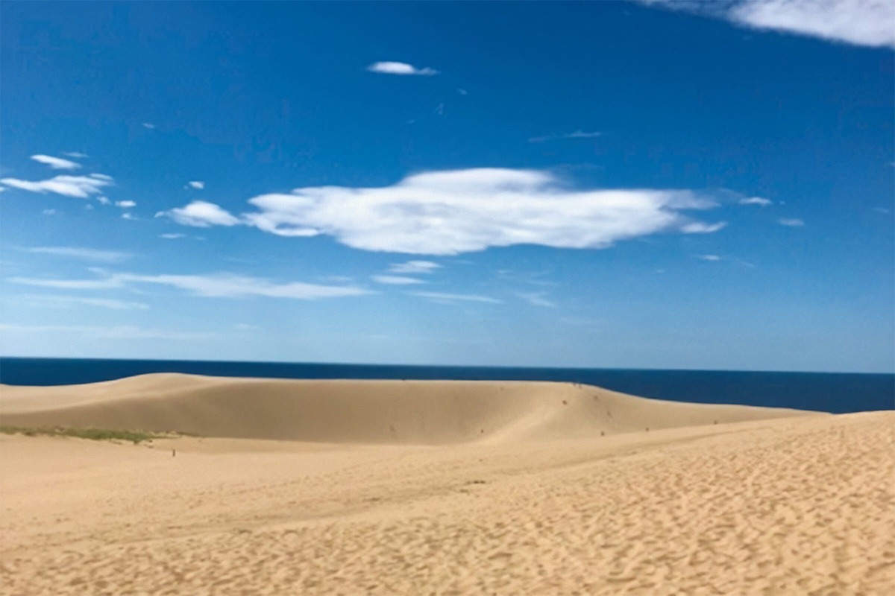
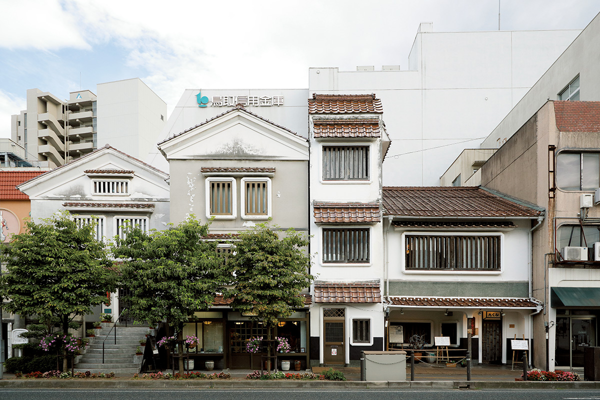
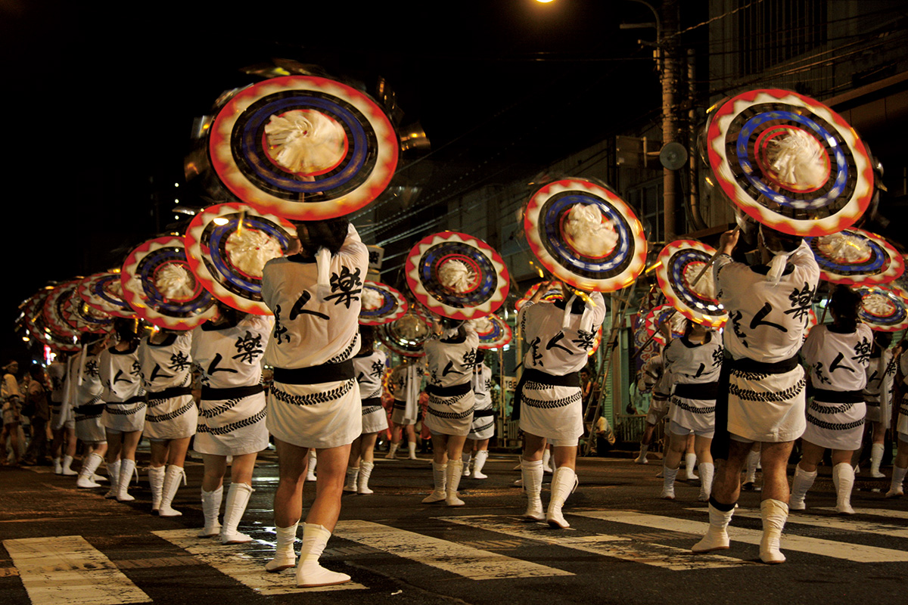
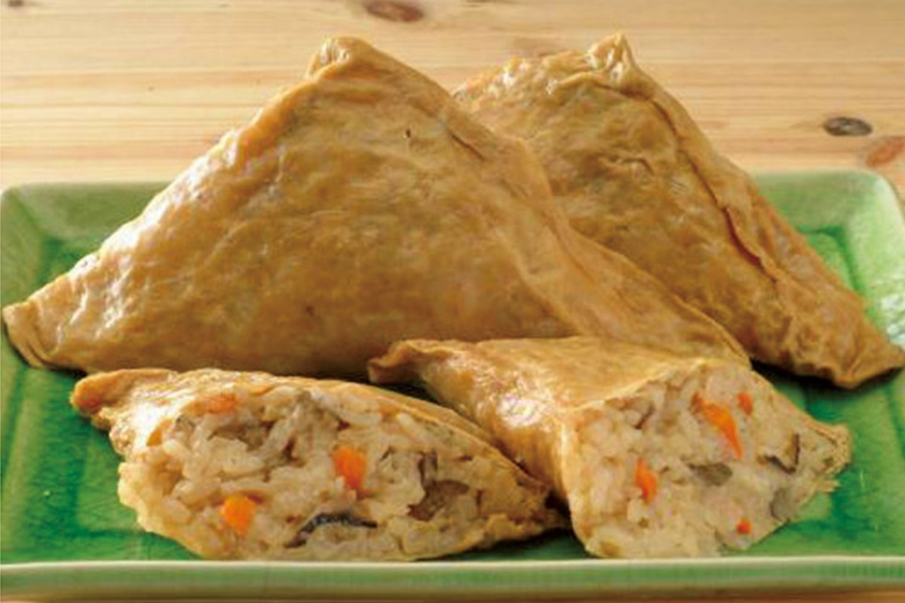
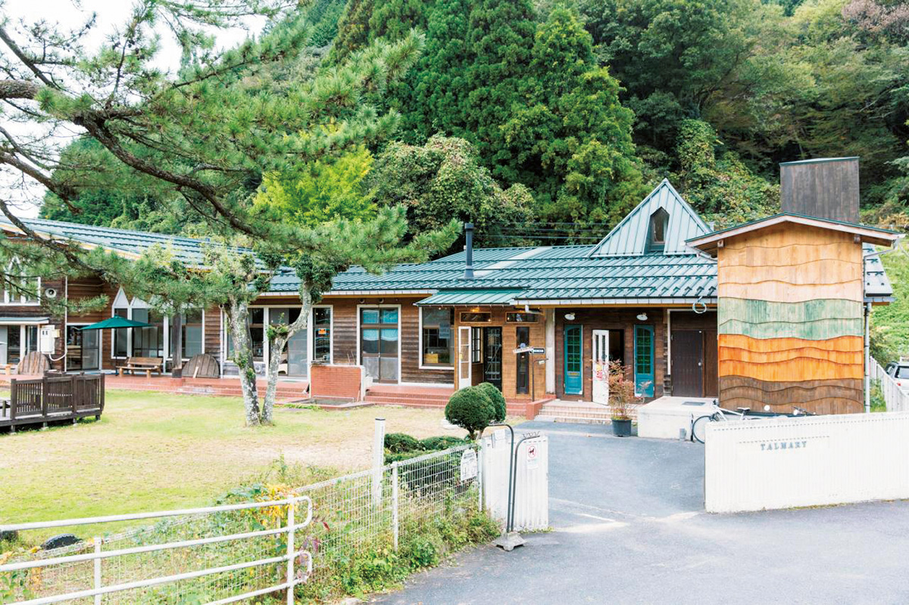
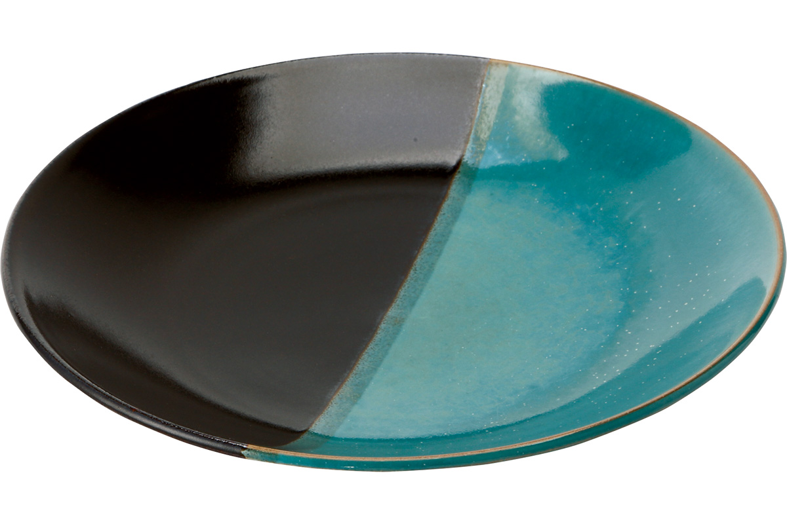
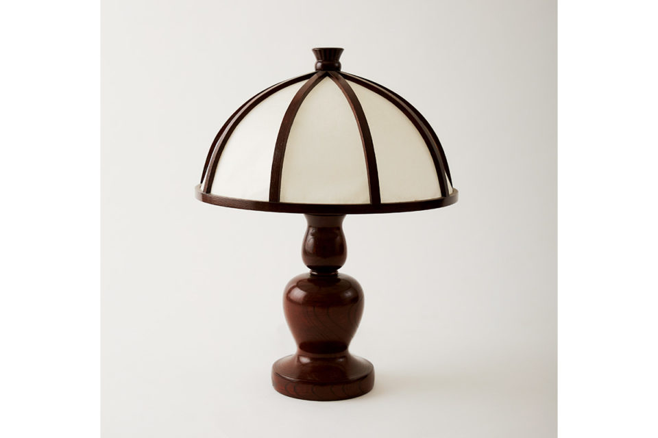
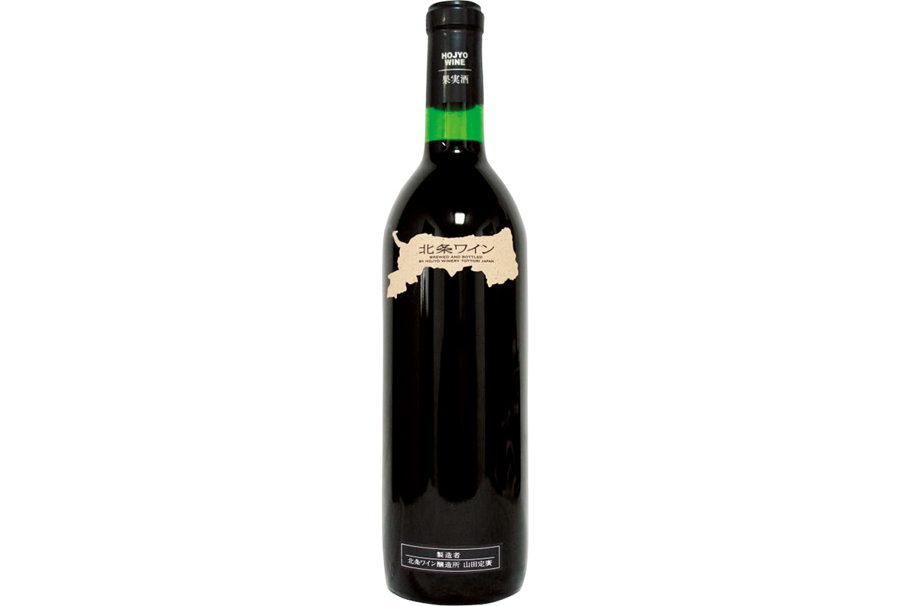
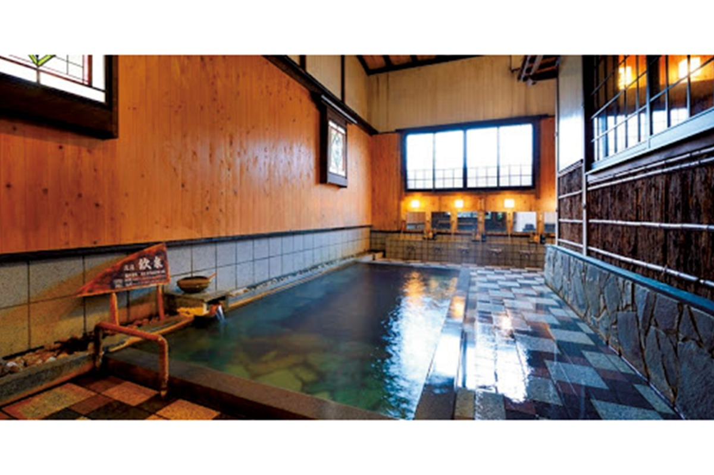

Префектура Тоттори
Тоттори: дюны у моря, зонты в танце и посуда народных мастеров

Волны золотого песка тянутся до горизонта, справа угадывается тёмная полоса Японского моря.
Самая малонаселённая префектура страны, где песчаные дюны выходят к Японскому морю, а в домах до сих пор живёт посуда, придуманная врачом-коллекционером. Разбираем, за чем ехать в Тоттори: от краба до лампы из мастерской народного искусства.
О префектуре
Край птицеловов и народного искусства
Тоттори обращена к Японскому морю на севере: вдоль берега тянутся белый песок и сосны, а на юге поднимаются горы, включая высочайшую вершину региона Тюгоку, гору Дайсэн. Рельеф здесь мягкий и спокойный.
Эмблема префектуры это летящая птица, собранная из знака «то» слова «Тоттори», и означает она свободу, мир и движение в завтрашний день. Имя места дала древняя родовая группа птицеловов: вокруг нынешнего города было много болот и топей, и здесь жили люди, которые ловили птиц, слетавшихся к воде.
Позже в эпоху Сэнгоку здесь поставили замок Тоттори, и земли двух областей, Инаба и Хоки, составили княжество. После отмены княжеств префектуру на время присоединили к Симане, но затем она снова стала отдельной.
Для тех, кто любит посуду и предметный дизайн, Тоттори неотделима от народного искусства. Врач и деятель движения мингай Ёсида Сёя вёл здесь работу над новыми ремесленными вещами, и благодаря ему красота народных предметов вошла в интерьер и мебель современного дома.
Что посмотреть
Дюны, которым больше ста тысяч лет
Песчаные дюны Тоттори
Крупнейшие прибрежные дюны страны раскинулись прямо у Японского моря. В зависимости от сезона и часа они меняют вид: утром песок прохладный и ровный, к вечеру ветер переписывает гребни заново. Это природный памятник и одна из главных точек притяжения региона.
- Справки
- информационный центр дюн Тоттори
- Телефон
- +81 857-22-0021
Что ещё посмотреть
- Зал Санбуцу-дзи на горе Митоку, храм, встроенный в скалу
- Гора Дайсэн, высочайшая вершина региона Тюгоку
- Улица Мидзуки Сигэру, бронзовые персонажи манги на улице

Праздники
Танец с зонтами против всех рекордов
Праздник Тоттори сянсян
В основе праздника лежит танец с зонтами Инаба, издавна известный в восточной части префектуры. На юбилейном пятидесятом фестивале в 2014 году его внесли в книгу рекордов как самый массовый танец с зонтами.

- Период
- ежегодно в середине августа
- Место
- город Тоттори, район вокзала
Другие праздники
- Праздник цветочных купален в Мисасе, вечерние огни у горячего источника
- Фестиваль Гайна в Ёнаго, танцы и барабаны на улицах
- Праздник рыбы в Сакаиминато, торговля и дегустация улова
Музеи и архитектура
Дом, где мингай стал музеем
Художественный музей народных ремёсел Тоттори
Музей собрал новые ремесленные работы, которые поддерживал местный врач Ёсида Сёя, а также старые предметы быта Японии, Кореи, Китая и Западной Европы. Само здание имеет статус государственного материального культурного наследия, потому это одно из святых мест движения мингай.
- Адрес
- 651 Sakaemachi, Tottori, Tottori
- Телефон
- +81 857-26-2367
- Сайт
- mingei.exblog.jp
Что ещё посмотреть
- Вилла Дзинпукаку, деревянный дом для гостей императора
- Ратуша города Кураёси, административное здание эпохи модернизма
- Общественный зал Ёнаго, концертный зал с историей
Местная кухня
Мешочек из тофу с рисом внутри
Итадаки
Большой жареный мешочек тофу наполняют сырым рисом и свежими овощами и томят в бульоне до готовности, поэтому вкус получается сладким и насыщенным. Это главное деревенское блюдо региона Санъин.

Что ещё попробовать
- Тофу-тикува, рыбная палочка с тофу
- Рамен на говяжьих костях, густой бульон и мясо
- Суши в листе хурмы, рыба с рисом в маринованном листе
Где поесть
Хлеб и пиво на диких дрожжах
Талмари в Тидзу
В лесу Тидзу берут только дикие дрожжи и на них делают крафтовое пиво и хлеб. Пространство устроили в переоборудованном старом детском саду, и его авторы прямо называют целью сделать место, где еда приносит максимум радости.

- Адрес
- 214-1 Ose, Chizu, Yazu, Tottori
- Телефон
- +81 858-71-0106
- Часы
- кафе 11:00-15:00, в субботу и воскресенье до 16:00
- Выходные
- вторник и среда
- Сайт
- talmary.com
Ремёсла
Две глины в одной тарелке
Мастерская Накаи и посуда сякэвакэ
Третий мастер семьи Сакамото делает тарелки в двух цветах, чёрном и бирюзовом, и соединяет в одной вещи черты народного ремесла и современного искусства. Такие пластины держат акцент на фактуре глазури.

- Телефон
- +81 858-85-0239
- Сайт
- nakaigama.jp
Лампа Марукаса из Тоттори
Деревянный светильник придумал сам Ёсида Сёя, и он стал образцом нового ремесла: простой силуэт, тёплое дерево, спокойный свет. В мастерской на улице Сакаэмати он стоит 83 600 иен.

- Место
- мастерская и магазин ремёсел Тоттори, улица Сакаэмати
Что привезти
Красное вино с песчаных дюн
Стандартное красное вино Ходзё
Виноград сорта мускат Берри А собирают на местных песчаных дюнах, а само хозяйство уделяет особое внимание подготовке почвы. У вина мягкая кислота и нежная терпкость, потому оно хорошо идёт с японской кухней. Бутылка объёмом 720 миллилитров стоит 1300 иен.

- Справки
- винодельня Ходзё
- Телефон
- +81 858-36-2015
- Сайт
- hojyowine.jp
Где остановиться
Старейший источник региона Санъин
Гостиница Иваия в Иваи
Купальня работает уже двенадцать веков. Здание гостиницы получило две звезды в путеводителе Мишлен по Киото, Осаке и Тоттори за 2019 год, и сюда приезжают ради воды и тишины горного посёлка.

- Адрес
- 544 Iwai, Iwami, Iwami, Tottori
- Телефон
- +81 857-72-1525
- Комнат
- 15
- Цена
- от 18 000 иен за ночь с двумя приёмами пищи на человека, налоги и сборы включены
- Сайт
- iwaiya.jp
Местный диалект
Как здесь говорят «очень вкусно»
- готцуй умай дэочень вкусно
- ваттайназдорово
- эттомного
- кинансэприходите, пожалуйста
Рекорды
В чём Тоттори первая
- №1 объём вылова краба
- №1 производство груши сорта XX век
- №1 выпуск бумаги для каллиграфии
Вопросы и ответы
Что ещё спрашивают о Тоттори
Какой рамен с мясом считается местным в центре и на западе префектуры?
Рамен на говяжьих костях. Его началом считают заведение «Мансюми» в городе Ёнаго, позже о нём написали блогеры из других префектур и даже собрали объединение любителей. В разных домах бульон делают на соевой основе или на соли.
Как называется взрослый самец краба в Тоттори?
Мацуба-гани. Самку называют сэко-гани или оя-гани: она дешевле и часто идёт в дополнение к самцу. Плотное мясо зимнего краба это главный вкус сезона в префектуре.
Справочник
Тоттори в цифрах
Общие сведения
| Административный центр | Тоттори |
| Муниципалитеты | 4 города, 14 посёлков, 1 село |
| Площадь | 3507 кв. км |
| Население | 560 тысяч человек |
| Плотность населения | 159,7 человека на кв. км |
| Туристов в год | 9,65 млн |
| Дерево префектуры | дайсэнская казацкая сосна |
| Цветок префектуры | цветок груши сорта XX век |
| Птица префектуры | мандаринка |
Климат
| Средняя температура | +15,7 |
| Максимум | +34,4 |
| Минимум | минус 0,9 |
| Осадки | 2184 мм |
| Ясных дней | 22 |
| Дождливых дней | 152 |
| Снежных дней | 48 |
Для путешественника
| Онсэнов | 16 |
| Гостиниц и рёканов | 424 |
| Музеев искусств | 7 |
| Музеев | 38 |
| Митиноэки, придорожных станций | 17 |
| Национальное сокровище | зал Окуин храма Санбуцу-дзи, встроенный в скалу |
| Важных культурных ценностей | 55, из них 3 национальных сокровища |
| Исторических мест | 19 |
| Живописных мест | 11 |
| Природных памятников | 56 |
| Национальные парки | Дайсэн-Оки, Санъин-кайган и ещё два |
Природные памятники
- Беркут, крупнейшая хищная птица гор
- Песчаные дюны Тоттори, крупнейшие дюны страны
- Роща святилища Ономи-но-сукунэ, старые деревья у храма
- Гигантская саламандра, редкое земноводное в чистых реках